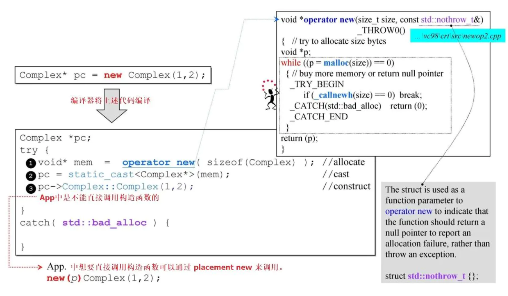
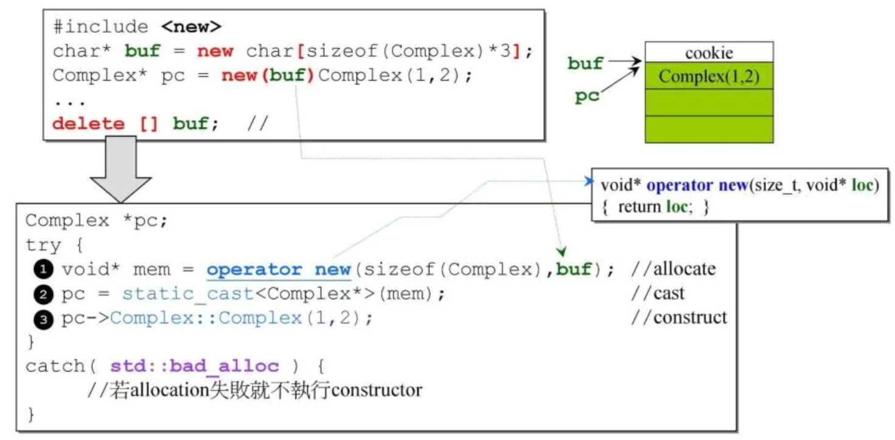
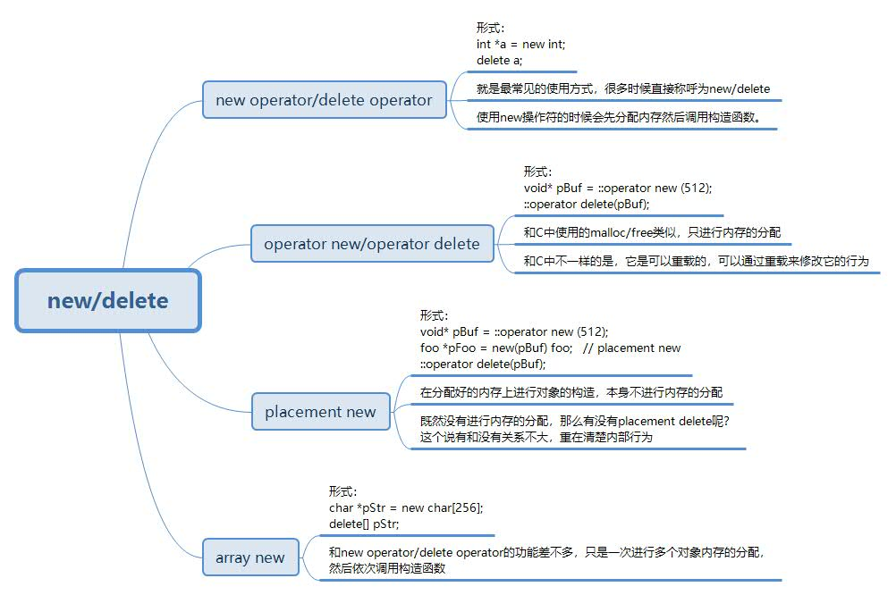

C++内存管理|02 内存操作相关函数
上一篇中从整体上来看系统中四个层面上内存的分配和释放，这样我们就对内存分配有了一个整体的认识。这一节则详细的来写写这四个层面中的操作符或函数的使用方法，以及他们背后的调用关系。首先我们从我们使用最多的new和delete来说起。
1. new 和 delete
new 操作符有时候也有地方称他为new operator，这和另外一个operator new非常容易让人混淆。这也是在很多的笔试面试中喜欢问到的知识。其实这两个有很大的区别的，new （new operator）是操作符，operator new却是函数。new操作符在使用的时候做两件事，现时分配内存，然后调用构造函数对对象进行初始化。但是operator new在使用的时候只做分配内存一件事情。说了这么多，那么我们怎么使用他们呢？下面我们通过一个例子来对比一下他们的使用。
#include <iostream>
class foo{
public:
foo(){
std::cout<<"foo ctor!"<<std::endl;
}
~foo(){
std::cout<<"foo dtor!"<<std::endl;
}
};
int main(int argc, char** argv) {
foo *pFoo = new foo;
delete pFoo;
void* pBuf = ::operator new (512);
::operator delete(pBuf);
return 0;
}
来分析一下运行的结果，我们new了一个foo的对象，和我们说的一样，使用new操作符的时候会先分配内存然后调用构造函数。这里我们确实看到了构造函数的调用，但是怎么证明它是去分配了内存呢？我们稍后来验证这一点的。在看看operator new的使用，看起来是不是觉得有点奇怪，其实我们只需要把operator new()看成一个函数名就好了，事实上它就是一个函数，而是我们知道，是个函数在C++里面都是可以被重载的，所以这个函数也是可以重载的。回到正题上，这里从他的用法上可以看到，operator new确实只能分配内存，因为我们没有办法传入类指针或者类名给这个函数嘛，最起码从外观上看是这样的。
使用new操作符的时候分配内存其实调用就是operator new()这个函数。说了上面这么多，就是下面这个图所示的。

上面出现了一个新的东西，那就是 placement new, 这种使用方式确实不像new那么常见，偶尔看到也有可能觉得这种语法很神奇。placement new的意思就是已经有分配好的内存了，但是我们想在这块分配好的内存上创建一个对象，而不是用new操作符再去分配内存。所以这里就可能产生疑问了，那么placement new有没有对应的delete呢？我们知道因为它根本就没有分配内存，所以也不需要delete来做什么事情了，所以也就没有对应的delete了，但是有些地方也说把placement new后使用的delete就称之为placement delete，当然我们理解它内部的动作就好了，不必要去扣这些字眼。

说完new, operator new和placement new，我们再来看一个也是比较常用的new操作—array new, 它的使用方法比较简单，就是加了一个中括号而已。形式上看起来比较简单，参考之前的经验，我们肯定会对它的构造的析构的过程比较感兴趣。
使用array new的时候，会根据我们new元素的个数多次调用构造函数，当然，使用对应的delete[] 的时候也会去根据对象的个数调用多次析构函数。这里就有疑问了，那如果我们使用new[] 但是delete的时候忘记了写[]会出现什么情况呢？大多数的书上会说这里会出现内存泄漏。这种情况下，内存泄漏是怎么产生的呢？其实这里的内存泄漏说的是那些类中分配了heap，本应该在析构的时候释放heap，但是却没有释放，从而导致了内存泄漏。那么我们如果是简单的类，里面没有分配heap呢？也会产生内存泄漏吗？当然不会。
是否存在内存泄漏最终要把握的一点就是申请的内存有没有进行释放。说完了new和delete这个系列，我们再来看看malloc和free.

2. malloc 和 free
malloc和free的使用相比new系列就要简单明了的多。
void* p = malloc(512);//512bytes
free(p);
上面的例子中使用malloc分配了512byte的空间，这里我们看到它返回的类型是 void* , 也就是说我们的malloc只管分配多大的空间，但是这块空间用来存放什么类型它是不管的。同样的，free也是只管释放内存，而不会像delete那样去调用析构函数。那么这里就又有一个问题了，如果创建了一个对象，但是我们不是使用delete进行释放的，而是直接使用free进行释放的，那么会出现什么问题呢？
可能出现内存泄漏！
同样，出现的原因还是因为对于类中分配了heap的情况下，没有调用析构函数，从而导致在类中分配的heap没有得到释放。
3. allocator
前面说到的应该都是我们经常用在手边的一些操作符/函数，allocator由于使用在STL内部，一般情况下我们也直接使用的是STL中的容器或者算法，所以也就可能忽视了它的存在，事实上，allocator在STL中扮演着相当重要的角色，它接管了容器和算法中内存管理的内容，使得容器和算法的使用更加的简单而且更加的不容易出错。那么allocator是怎么使用的呢? 先来看看下面的例子。
#ifdef _MSC_VER
//以下两个函数都是 non-static，定要通过 object 调用。以下分配 3 个 ints.
int* p4 = allocator<int>().allocate(3, (int*)0);
allocator<int>().deallocate(p4,3);
#endif
#ifdef __BORLANDC__
//以下两个函数都是 non-static，定要通过 object 调用。以下分配 5 个 ints.
int* p4 = allocator<int>().allocate(5);
allocator<int>().deallocate(p4,5);
#endif
#ifdef __GNUC__
//以下两个函数都是 static，可通过全名调用之。以下分配 512 bytes.
//void* p4 = alloc::allocate(512);
//alloc::deallocate(p4,512);
//以下两个函数都是 non-static，定要通过 object 调用。以下分配 7个 ints.
void* p4 = allocator<int>().allocate(7);
allocator<int>().deallocate((int*)p4,7);
//以下两个函数都是 non-static，定要通过 object 调用。以下分配 9 个 ints.
void* p5 = __gnu_cxx::__pool_alloc<int>().allocate(9);
__gnu_cxx::__pool_alloc<int>().deallocate((int*)p5,9);
#endif
上面可以看到，对于不同版本的编译器实现，allocator的使用上也会有所不同。但是容器提供给应用程序开发者的接口还是一致的，所以对于这种咋不同的编译器上又不同表现的代码，一般很少使用在考虑跨平台的软件中的。
好了，关于几个层面上内存操作的函数/操作符到这里就说完了。关于allocator的内部实现，已经更为底层的原理，在后续的篇章中将会一一叙述。
- 原文作者：Binean
- 原文链接：https://bzhou830.github.io/post/20180110C++%E5%86%85%E5%AD%98%E7%AE%A1%E7%90%8602/
- 版权声明：本作品采用知识共享署名-非商业性使用-禁止演绎 4.0 国际许可协议进行许可，非商业转载请注明出处（作者，原文链接），商业转载请联系作者获得授权。